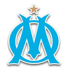

|  | Marseille |
| Ethnic | French |
| Job | French Football Club |
| Desc | xxxx |
Affiliation
| Org | France |
- 2017 01 12
- West Ham have rejected a £20 million bid from Marseille for want-away Dimitri Payet
2017 01 15 Retrieve
[Marseille supporters have launched an attack on veteran striker Didier Drogba] Drogba, stop saying you love L’OM, you make in a month what we won’t earn in a lifetime. Stop feeling sorry for yourself and go back to China.
- 2017 01 31
- The LA Galaxy have announced the signing of French midfielder Romain Alessandrini from Olympique de Marseille as a designated player
- 2018 08 09
- Fulham have completed a deadline-day swoop for Marseille defensive midfielder Andre-Frank Zambo Anguissa
- 2018 08 28
- Marseille have secured the signature of Dutch midfielder Kevin Strootman from Roma for a fee in the region of €25 million
- 2019 05 28
- Former Chelsea and Tottenham boss Andre Villas-Boas has returned to management at Marseille on a two-year contract
- 2019 06 28
- Parma are interested in a move for out-of-contract Marseille striker Mario Balotelli, but the club cannot afford a deal for former AS Roma hero Daniele De Rossi.
- 2019 07 03
- Argentine winger Lucas Ocampos has become Sevilla’s latest signing of the summer after making a €15m switch from Marseille.
- 2019 07 06
- Celtic midfielder Olivier Ntcham has revealed he wants to leave the club for Marseille.
- 2019 08 05
- Dario Benedetto has sealed his reported €14million move from Boca Juniors to Marseille.
2020 03 31 Retrieve
[Former Marseille president Pape Diouf has died at age 68 due to complications from Covid-19] Olympique de Marseille learned with great sadness of the death of Pape Diouf. Pope will remain forever in the hearts of Marseillais as one of the great craftsmen of the history of the club. Our condolences to his family and loved ones
2020 05 19 Retrieve
[Marseille confirm Villas-Boas offer as they bid to quash uncertainty] For 20 years Olympique de Marseille has been a club that has suffered chronic instability. Twenty-four coaching changes (some coaches have had several roles at different periods) have been issued by OM during this period. Over these 20 years, only three coaches have received a contractual commitment of four years or more: Didier Deschamps, Rudi Garcia and today Andre Villas-Boas with this proposal. First of all, this shows the club’s desire to create conditions of stability without as a foundation that can be built in the long term in football and in particular at Olympique de Marseille. This also demonstrates the determination of the club to invest when it deems it necessary in the conditions of sporting success. Finally, this demonstrates all the confidence the club has in the technical qualities of Andre Villas-Boas, with which Olympique de Marseille wishes to write an important page in its modern history
2020 05 20 Retrieve
[Villas-Boas on the brink at Marseille amid power struggle with Englishman Paul Aldridge] On Monday, May 18, the club sent Andre Villas-Boas an offer to extend his contract by two years (seasons 2021-22 and 2022-23) plus one optional year (2023-24) if OM qualify for the Champions League that year. For 20 years, only three coaches have benefited from a contractual commitment of four years or more: Didier Deschamps, Rudi Garcia and today Andre Villas-Boas with this offer. Primarily, this demonstrates the club’s desire to create the conditions for stability without which nothing solid can be built in the long term in football and in particular at Marseille